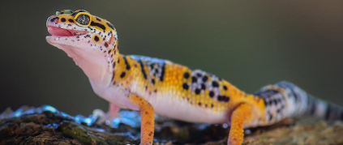
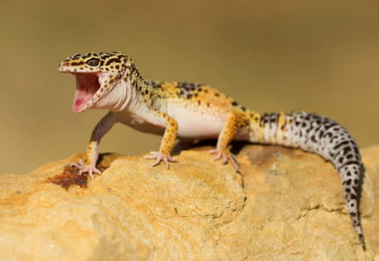

Gekon Lamparci
- odżywiają się głównie małymi robakami np. świerszcze lub mączniki
- w warunkach domowych potrzebują stosunkowo małe terrarium, najlepiej by było jakby terrarium było przybliżone do terenów pustynnych, także potrzebują lampy grzewczej lub maty grzewczej
- żyją około 14 lat
- głównie zamieszkuje suche, trawiaste i skaliste tereny Azji Południowo-Zachodniej oraz Środkowej